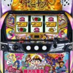

← 資料一覧 ま行 Lマギアレコード 魔法少女まどか☆マギカ外伝 OFF Lマクロスフロンティア4 OFF Lマジカルハロウィン8 OFF L麻雀格闘倶楽部 覚醒 OFF L麻雀物語 OFF L緑ドン VIVA!情熱南米編 REVIVAL OFF ミリオンゴッド‐神々の軌跡‐ OFF 無職転生 ～異世界行ったら本気だす～ OFF  L桃太郎電鉄 OFF LモンキーターンV OFF Lモンスターハンターライズ OFF